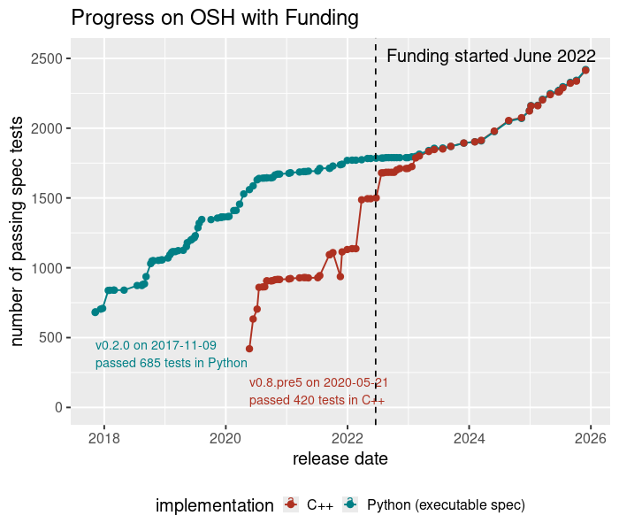
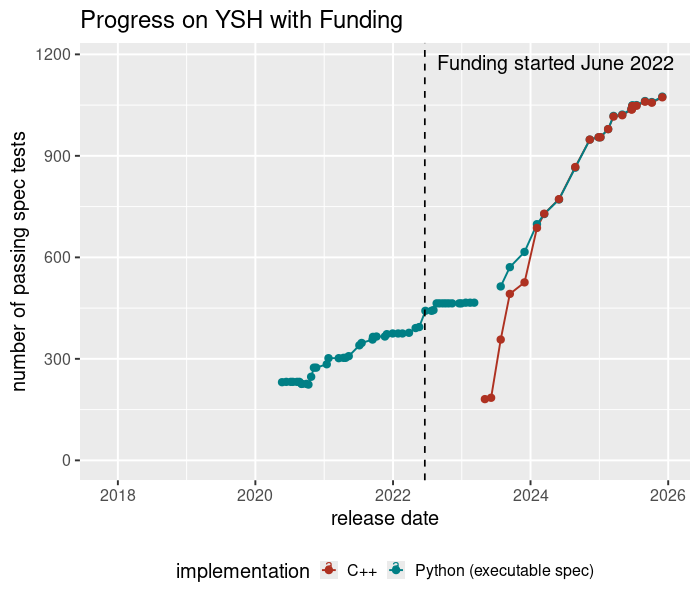
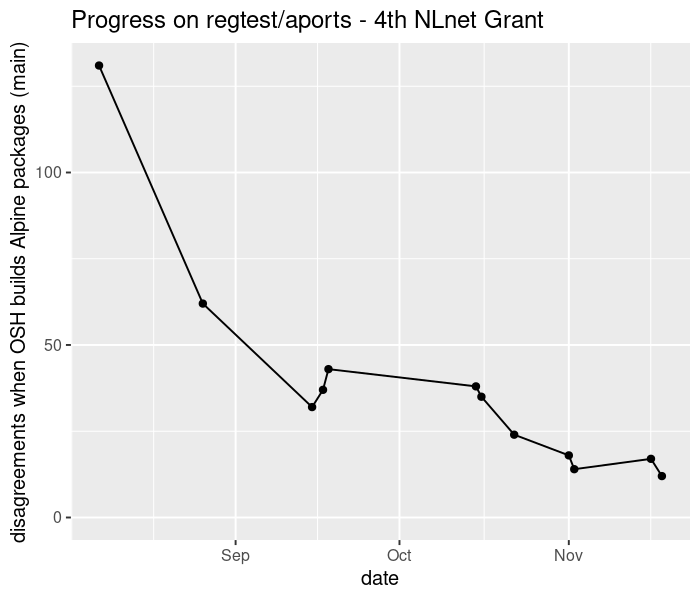

Why Sponsor Oils? | blog | oils.pub
We received our first NLnet grant in June 2022, and we've been awarded three more grants since then. Four years and four grants later, it's worth looking back to see what we did.
So I made some plots for this post!
Unfortunately, we won't finish the fourth grant. I wrapped it up early because of the family issues mentioned in March: A Pause in the Project. What happened is that more contributions led to a backlog of pull requests, I haven't been able to review them all.
I also share some high-level thoughts and feelings on the state of the project.
In March 2022, just before we received the first grant, I published Oil Is Being Implemented "Middle Out".
It has a plot of our spec test metrics.
I wrote that the gray rectangle showed a "fallow period" in the development of OSH. OSH wasn't making progress as fast as it had, because I started working on YSH (then called the Oil language).
In other words, it was clear the project got too big, and I needed help! So what happened after we were funded, and more people helped?
I revived the code to generate that 2022 plot (shell, Python, and R scripts!). Here's the update:

OK cool, I wasn't expecting the story to look this clean!
The blue line and red line converged in early 2023, which means that the Python implementation and C++ implementation pass all the same tests. In other words, we finished the Python-to-C++ translation.
The slope of the converged lines increased. That means that we made faster progress on OSH once the translation was done.
So the funding from NLnet really helped OSH.
But that's not all! After the first grant, contributors were excited about YSH, and I applied for another grant. (I also renamed the project in early 2023.)
Here's a similar plot of YSH progress:

Notice a few things:
So these plots paint a clear and positive picture. The funding helped! Before making the plots, I wasn't sure how they would look.
OK now let's look at what happened in the last year or so. The goal of the fourth grant was to stress test OSH, by running it as the only shell on a complete Linux system (Alpine Linux). I described that work in December:
Contributors wrote blog posts about some of the fixes, which I linked to in March:
We kept track of the work with this dashboard (made with Markdown and shell scripts):
regtest/aportsHere's a visualization of that data (limited to the Alpine main repo):

So we went from 139 disagreements building with OSH in August, to 11 in early December. (There was at least 1 disagreement fixed after the last measurement of 12.)
This was fantastic momentum, but there is a caveat. I merged many pull requests, but the backlog of unreviewed pull requests also grew.
And, in the same month, most of my free time evaporated.
Honestly, I was feeling a bit down about the project before writing this post. I sent more than one e-mail to NLnet explaining the early end of the grant, which were perhaps overly pessimistic.
But now I feel pretty good about what we did.
The way I framed it is that we met our goals for the grants, but that doesn't necessarily mean the overall project has been a success. So let's talk about the grants first, and then the project.
Yes, the plots basically show that, but they don't tell the whole story. I think the real story is that we did many hard things that could have failed, but ended up working.
So one reason I've been working on this project for 10 years is that things keep working. There have been several "wrong turns" and some backtracking, but we haven't gotten stuck on anything for long.
And I think there's basically no risk that we don't close the gap on the remaining 11 disagreements, as long as we have time to do it right.
But even though we met these smaller goals, I think it's time to re-evaluate the project goals.
(It's important to say that my available time colors this whole discussion. I hope that situation will change, but it may not change soon.)
So let's go back to the slogan:
Our upgrade path from bash to a better language and runtime
We did in fact do what many people thought was impossible: implement a POSIX- and bash-compatible shell in a principled way; and then upgrade that to a new language YSH (with some caveats).
But, I am not sure that this is actually an upgrade path in practice. What I underestimated is that this strategy requires a lot of work for distros. And the foundations of most distros don't change a lot, for obvious reasons. Many foundational shell scripts are in maintenance mode, and the maintainers only understand parts of them.
On the other hand, I would say that e.g. systemd is evidence that the foundations can be changed, in a pretty radical way. And distros pulled systemd, apparently because it saved them a lot of work. But I can see that, right now, there is not a killer reason for distros to pull Oils. It's more like we would be pushing, and I think that's somewhat fundamental, without some big changes.
So I may no longer believe in the "upgrade path from bash" framing. Right now, it doesn't seem realistic.
But I still believe in the even more ambitious goals of the project:
"Compressing" many domain-specific languages into a general purpose shell language: Sketches of YSH Features (June 2023)
A distributed shell
regtest/aports, our Soil CI, and making a release in the cloud. See the TODO list below.Headless shell / GUIs interfaces - Screenshots and Wiki
But I simply don't know how to make progress on those goals, with the time I have, and the resources we have. But I honestly have a lot of fun pursuing them.
I made most of the points in this post in my mails to NLnet. Here are some other thoughts from those mails.
We didn't find enough people to work on YSH itself. Aidan implemented essential parts of YSH, and provided crucial design feedback on features like closures, but we could have used more help.
One way you can see this is that we never solved the problem of making progress on OSH and YSH in parallel. For example, the fourth grant was all about OSH, and we didn't make much progress on YSH during that time.
The plots do show increased progress, so the grants did help. But I think the scope of the project was always too large.
I also think I was a bit naive about what you can do in the FOSS model. I didn't pay enough attention to the project's organization. Prior to NLnet funding, I worked on the project myself for six years! There were other contributors, but nobody approaching full time.
Another way to say this is that, historically, I would be interested in working on something like Bell Labs Unix, more so than GNU/Linux. I'm interested in new system design ideas, just as much as principled implementations of existing systems.
Here's a related comment:
My comment on
The Curse of Knowing How, or; Fixing Everything (notashelf.dev via lobste.rs)
112 points, 28 comments on 2025-05-06
I think Linux has an enormous design debt to Bell Labs [2] ...
I actually wonder if LLM-generated code could be a sign of a breakdown. i.e. we have this big mess of open source code, which in theory should be very valuable, but some large proportion of new programmers can only understand it by throwing LLMs at it ...
In other words, I'd say that our collective software infrastructure was not in great shape, prior to the introduction of LLMs.
Since we are ending the 4th grant early, I thought it would be appropriate to publish my thoughts. We made a ton of progress over the last 4 years, but the project is "paused" for now. There will still be updates and releases — see the TODO list below — but it will be slow and "on demand".
That is, I hope people will show up on Zulip to chat, but I won't "push" the project for quite awhile.
Thank you to everyone who contributed! Not just people who worked under the grant, but everyone else as well.
And thank you to NLnet!
Please feel to ask questions or give feedback in the comments on Zulip!
Here's what I'm thinking about right now.
try, from Will Clardy and Samuel Hierholzer.Here are some topics I cut out of this post.
In early 2025, I wrote a YSH syntax definition in VimScript, which resulted in the doc Three Algorithms for YSH Syntax Highlighting.
Based on my previous experience with VimScript around 2008 or so, I can say that this wouldn't have happened without dozens of queries to Claude. (But you can see from the doc that it's not vibe-coded. Instead, I learned the language by writing a program, with tests.)
LLMs also helped me learn more raw SQL. In the past, I've used the R language for table manipulation — for example, the plots above were generated with R and ggplot2 (grammar of graphics).
But for the regtest/aports reports above, I used sqlite, which means I had to learn raw SQL. Again I leaned on Claude for that, because SQL has bad syntax, and is hard to learn. (Related: Against SQL)
Here's another excerpt from my comment above:
Maybe future programmers will actually want some control back - to build systems that are understandable, reliable and secure, use hardware in a reasonable way, etc.
So that comment is about personal agency, and that's basically what the Oils project is about:
So shell still very much aligns with my interests, and it aligns the future of computing. So I hope I'll again have time to work on these ideas — perhaps from a different angle, and putting to use some of the things I learned about both engineering and project management.